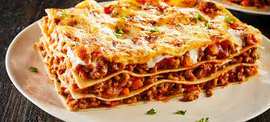

Lasagna

Description
Plato tradicional de la cultura Italiana , combina masas y quesos por capas
Ingredientes
- Harina
- Huevos
- Leche
- Quesos
- Crema de Leche
- Salsa de Tomates
Pasos
- Generar la masa
- Rellenar cada capa con Salsa y Queso
- Rellenar cada capa con Salsa y Queso
- Cubrir con abundante Queso Rayado